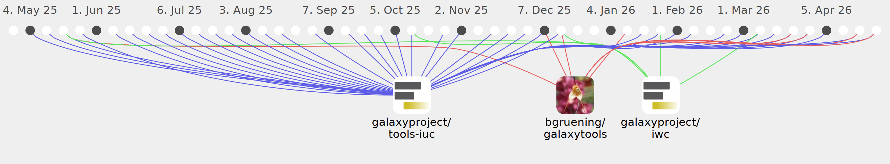

gxydevbot

Commits all-time: 95
Commits last year: 65

(44)
- e7eed82
- f874a23
- f05d53e
- 42b2d78
- 1f7b04d
- 9af8730
- 6b50408
- 81d7b9e
- faa8c4b
- cb30e4b
- 3d970de
- 81b5c01
- a7729ad
- fe6bd49
- 9257c0d
- 89826ca
- f27749b
- e08dd0e
- d439679
- dcee728
- 4492dcb
- 25e0d36
- 547a79c
- 2a3d084
- 00dc2cd
- f4604cc
- 582bdf8
- cb48fa8
- 3cb3d6a
- d6d6f4b
- 4e6f816
- 94585e4
- d4af7d3
- 99187c0
- 914a9c9
- aab64c2
- 4817c78
- e42ea8c
- d5994c4
- 1f7a012
- c02672d
- 4889f07
- cf000ec
- 80b32c4
(15)
(6)